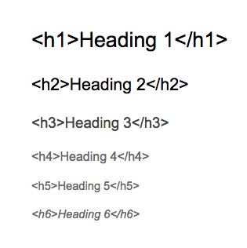
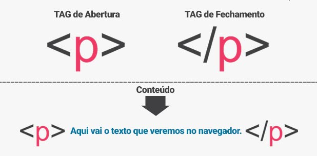
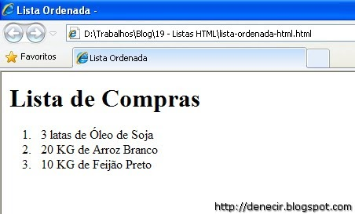
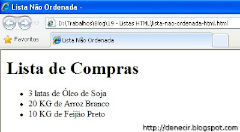

Primeiros Passos com HTML
Índice
Definição e uso de: < H1 >, < H2 >, < H3 >, < H4 >, < H5 > e < H6 >
Observe a seguinte imagem abaixo;

- O marcador < h1 >< /h1 > definine um título com fonte tamanho 24 pontos
Título
- O marcador < h2 >< /h2 > definine um título com fonte tamanho 18 pontos
Título
- O marcador < h3 >< /h3 > definine um título com fonte tamanho 14 pontos
Título
- O marcador < h4 >< /h4 > definine um título com fonte tamanho 12 pontos
Título
- O marcador < h5 >< /h5 > definine um título com fonte tamanho 10 pontos
Título
- O marcador < h6 >< /h6 > definine um título com fonte tamanho 08 pontos
Título
voltar
O que significa a tag < P > < / P > em HTML?
Observe a seguinte imagem abaixo;

A tag < p >:
Permite a inserção de parágrafos no conteúdo HTML.
Por si só, o uso desta tag nos permite espaçar um parágrafo do outro, mesmo que no código eles estejam na mesma linha. Ou seja: ao fechar a tag com < / p >, o HTML gera uma quebra de linha.">
voltar
Listas ordenadas E Listas não-ordenadas;
Observe a seguinte imagem abaixo;

Utilizada para marcar uma ordenação no conteúdo.
Quando a informação tem uma seqüência a ser respeitada. Para iniciar a marcação utilizamos o elemento ol.
Depois para marcamos os itens das listas, utilizamos o elemento li. As listas são renderizadas com uma marcação seqüencial antes do conteúdo da lista.
- exemplo 1
- exemplo 2
- exemplo 3
Observe a seguinte imagem abaixo;

O tipo de lista mais comum de se utilizar em sites são as listas não-ordenadas. Esse tipo de lista é utilizado quando a informação a ser mostrada não segue uma seqüência.
Para iniciar uma lista não ordenada usamos o elemento ol. Para marcar os itens dessa lista usamos o mesmo elemento li.
- exemplo 1o
- exemplo 2o
- exemplo 3o
voltar
Frame
voltar
Links de referências
voltar